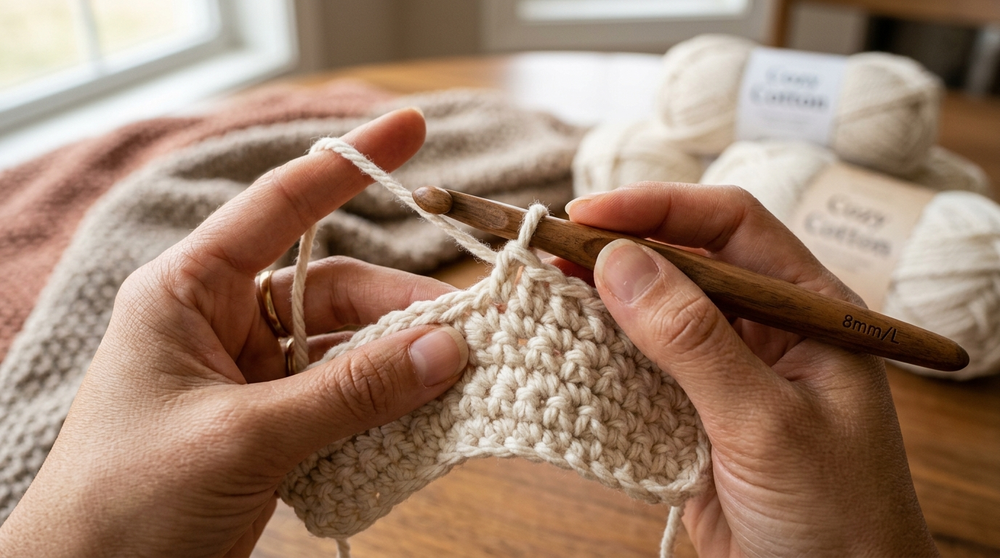
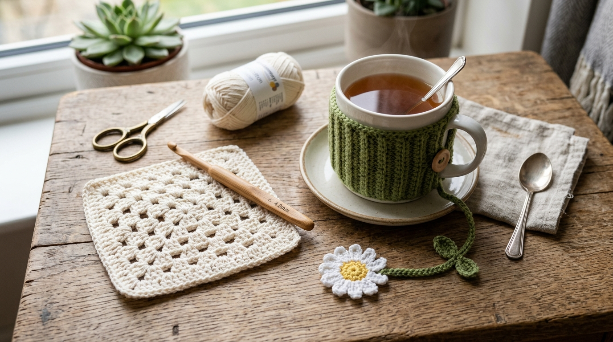

जब धागा आपकी उंगलियों के बीच से सरकता है, तो कमरे में एक अद्भुत, ध्यानमग्न खामोशी और शांति उतर आती है। तेज-तर्रार स्क्रीन और लगातार बजते नोटिफिकेशन्स के इस दौर में, क्रोशिया (Crochet) हमारे मन को एक ठहराव देता है—एक ऐसी स्पर्शनीय कला जहां आप धागे के एक-एक फंदे से कुछ सुंदर और सच्चा रचते हैं।
मशीन से बुने स्वेटरों के उलट, असली क्रोशिया को दुनिया की कोई भी मशीन नहीं बना सकती। आप जो भी एक फंदा लगाते हैं, वह सिर्फ और सिर्फ इंसानी हाथों से ही मुमकिन है। चाहे आप शाम के वक्त मानसिक शांति तलाश रहे हों, अपने किसी प्यारे दोस्त को हाथ से बना तोहफा देना चाहते हों, या अपने घर के लिए खूबसूरत कोस्टर बनाना चाहते हों—क्रोशिया सीखना बेहद आसान है और हर कदम पर दिल को खुशी देता है।
"क्रोशिया सिर्फ चीजें बनाने का नाम नहीं है। यह वक्त की रफ्तार को इतना धीमा कर देने का नाम है कि आप समय को खूबसूरत बुनावट में बदलते देख सकें।"
1. क्रोशिया धीमी और सुकून भरी जीवनशैली की सबसे प्यारी कला क्यों है
बहुत से लोग सोचते हैं कि किसी हस्तशिल्प को सीखने के लिए बहुत बड़ी वर्कशॉप या महंगे औजार चाहिए। क्रोशिया के साथ ऐसा कुछ भी नहीं है। एक अकेला हुक, एक गोले का धागा और छोटी कैंची—यह सब आपके हैंडबैग में आराम से आ जाता है। चाहे आप ट्रेन के सफर में हों, बालकनी में शाम की चाय पी रहे हों, या पार्क में बैठे हों।
न्यूरोलॉजिस्ट और थेरेपिस्ट भी धागे की लयबद्ध बुनाई को मानसिक स्वास्थ्य के लिए बेहद असरदार मानते हैं। एक ही लय में फंदे खींचने की यह क्रिया मन को 'फ्लो स्टेट' (गहरे ध्यान) में ले जाती है, जिससे बेचैनी और तनाव काफूर हो जाते हैं।
2. शुरुआती किट: सही हुक, धागे (Yarn) और जरूरी सामान कैसे चुनें
किसी ऊन की दुकान में जाने पर सैकड़ों तरह के धागे और हुक देखकर सिर चकरा सकता है। बिल्कुल शुरुआती इंसान के लिए यह सीधा फॉर्मूला याद रखिए:
बिगिनर का जादुई फॉर्मूला
एक 4.0 mm या 5.0 mm का एर्गोनॉमिक हुक लें और उसके साथ हल्के रंग का 100% कॉटन या ऐक्रेलिक धागा (जैसे क्रीम, हल्का पीला या सेज ग्रीन) चुनें। अपने पहले प्रोजेक्ट के लिए काले, गहरे नीले या रोएंदार धागों से बिल्कुल बचें—हल्के और चिकने धागे में हर फंदा साफ दिखता है, जिससे गलतियां फौरन पकड़ में आ जाती हैं!
शुरुआती सामान की चेकलिस्ट:
- एर्गोनॉमिक क्रोशिया हुक (4mm - 5mm): लकड़ी या रबर की ग्रिप वाले हुक हाथों को थकने नहीं देते, खासकर जब आप पहली बार सीख रहे हों।
- 100% कॉटन यार्न (DK / 8-Ply): कोस्टर, बैग और मग कवर के लिए कॉटन सबसे अच्छा होता है क्योंकि यह फैलता नहीं है और फंदे एकदम साफ उभरते हैं।
- टेपेस्ट्री सुई (Tapestry Needle): बिना नोक वाली मोटी आंख वाली सुई, जिससे प्रोजेक्ट पूरा होने पर बचे हुए धागों को अंदर छुपाया जाता है।
- स्टिच मार्कर्स (Stitch Markers): छोटी प्लास्टिक की क्लिप्स, जिन्हें पहली और आखिरी चेन में लगाया जाता है ताकि कोई फंदा छूट न जाए।

3. वे 4 बुनियादी टांके (Foundation Stitches) जो हर शुरुआती को आने चाहिए
दुनिया का लगभग हर क्रोशिया डिजाइन—चाहे नानी के जमाने का कंबल हो या कोई सुंदर पर्स—सिर्फ इन चार बुनियादी टांकों पर टिका होता है। इन्हें सीख लीजिए, फिर आप कुछ भी बना सकते हैं:
स्लिप नॉट और फाउंडेशन चेन (Slip Knot & Chain - ch)
हर बुनाई की शुरुआत। स्लिप नॉट धागे को हुक पर मजबूती से बांधती है, और हुक से धागा खींचकर मोतियों की माला जैसी शुरुआती चेन बनाई जाती है जिस पर बाकी सारे टांके बैठते हैं।
सिंगल क्रोशिया (Single Crochet - sc)
सबसे घना और मजबूत टांका। हुक को चेन में डालें, धागा लपेटकर बाहर लाएं (2 लूप), फिर धागा लपेटकर दोनों लूप्स से निकाल लें। कोस्टर, टोपी और मजबूत बैग्स के लिए यह सबसे बेहतरीन है।
हाफ डबल क्रोशिया (Half Double Crochet - hdc)
संतुलित और खूबसूरत टांका। सिंगल क्रोशिया से थोड़ा ऊंचा और पीछे की तरफ एक बहुत प्यारी धारीदार (ribbed) बनावट छोड़ता है। मफलर और चाय के मग कवर के लिए एकदम सही।
डबल क्रोशिया (Double Crochet - dc)
ऊंचा, जालीदार और हवादार टांका। यह सिंगल क्रोशिया से दोगुनी रफ्तार से आगे बढ़ता है। क्लासिक ग्रैनी स्क्वायर (Granny Squares), शॉल और समर टॉप्स इसी से बनते हैं।

4. एक ही दोपहर में बनने वाले 3 आसान शुरुआती प्रोजेक्ट्स
शुरुआत में ही रानी-साइज का बड़ा कंबल बनाने की गलती मत कीजिए—उसमें महीनों लग जाते हैं और इंसान बीच में ही हिम्मत हार जाता है! छोटे प्रोजेक्ट्स से शुरुआत कीजिए जो 1 से 2 घंटे में पूरे हो जाएं और तुरंत दिल को खुशी दें:
1. टी मग कोजी (Mug Cozy)
हाफ डबल क्रोशिया से बना एक सीधा आयत जिसमें लकड़ी का बटन लगा होता है। यह चाय को गर्म रखता है और हाथ नहीं जलने देता।
2. डेज़ी फूल वाला बुकमार्क
सफेद और पीले धागे की बची कतरनों से बना एक प्यारा फूल और लंबी चेन डंडी—किताब प्रेमियों के लिए दुनिया का सबसे अनमोल तोहफा।
3. बोहो स्क्वायर कोस्टर
4x4 इंच का चौकोर कॉटन कोस्टर जिसके दोनों किनारों पर झालर (fringe) लगी होती है। कॉफी टेबल को तुरंत एस्थेटिक बना देता है।
5. सीधी किनारी और एकसमान बुनाई के लिए प्रो-टिप्स
अगर आपका पहला चौकोर पीस थोड़ा तिरछा या समोसे जैसा बनने लगे, तो घबराइए मत! लगभग हर नया सीखने वाला किनारों पर फंदे घटा या बढ़ा देता है। इन तीन आसान आदतों से यह फौरन ठीक हो जाएगा:
- हर लाइन के आखिर में फंदे जरूर गिनें: अगर आपने 20 चेन से शुरुआत की थी, तो हर कतार के बाद गिन लें कि पूरे 20 फंदे ही बने हैं।
- पहले और आखिरी फंदे में स्टिच मार्कर लगाएं: जैसे ही आप काम पलटें, पहले और 20वें फंदे में छोटी सेफ्टी पिन या मार्कर अटका दें ताकि छोर न छूटे।
- हाथों को ढीला और तनावमुक्त रखें: अगर हुक फंदे में आसानी से नहीं घुस रहा है, तो आप धागा बहुत कसकर खींच रहे हैं। हुक को अपनी चाल चलने दें!
अक्सर पूछे जाने वाले सवाल (FAQs)
लेखिका: गुरदीप सिधू (Gurdeep Sidhu)
संस्थापक, Sidhu's Views। धीमी जीवनशैली, हस्तनिर्मित बुनाई और हाथ से चीजों को गढ़ने के सुख की खोजी।